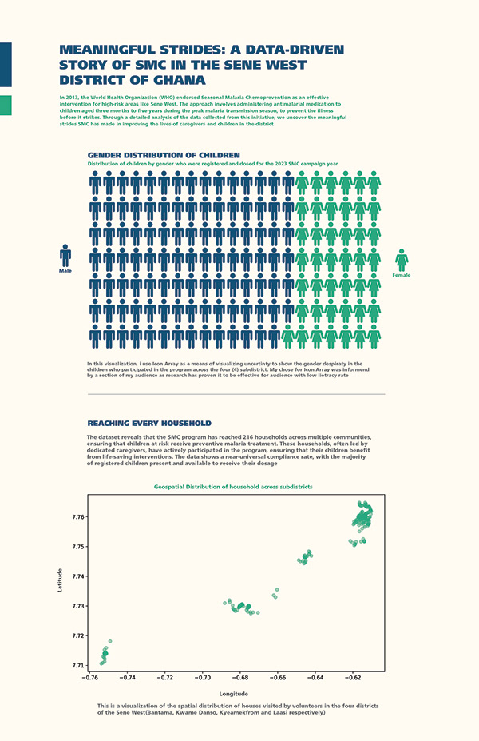

Overview
A visual narrative exploring the progress of Seasonal Malaria Chemoprevention in Sene West District, Ghana. Uses data-driven design to communicate public health intervention outcomes to diverse audiences — from health workers to community members.
Draws on district-level malaria surveillance data to track the impact of SMC across multiple implementation cycles. Visual comparisons and contextual framing make the data meaningful for audiences without statistical training.

